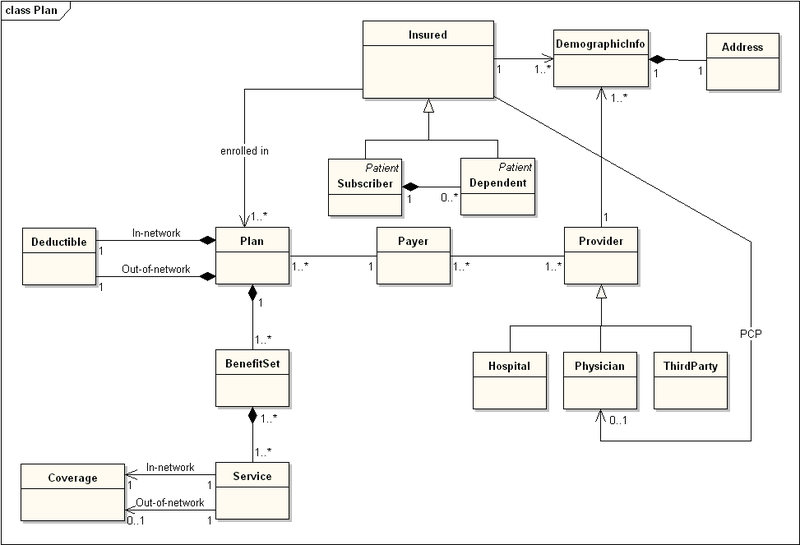
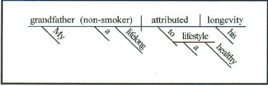
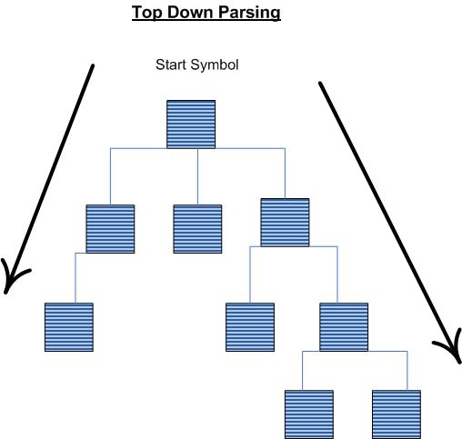
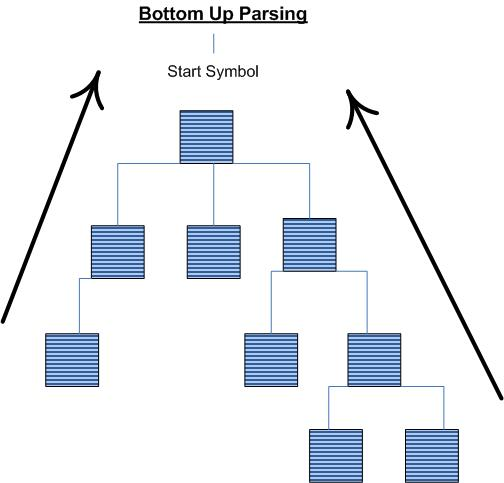

Penn State Great Valley Engineering
DSL Course - Lecture 2
Implementing
DSLs
In first class we set the guidelines for the class and *hopefully*
explained what a DSL is and why they are useful. In this
class we will look at how to build a DSL. This class is not
specific to internal or external DSL but looks at the common issues for
both. Future classes will look at the specific issues for
either internal or external DSLs.
Architecture of DSL Processing
First some definitions:
Domain
Model
-
A domain model is a model of the domain within which an Enterprise
conducts its business. The domain model for one enterprise
should
be the same as that for any other enterprise conducting business in the
same domain.
The
domain model can be thought of as a conceptual model of a domain of
interest (often referred to as a problem domain) which describes the
various entities, their attributes, roles and relationships, plus the
constraints that govern the integrity of the model elements comprising
that problem domain.

Semantic
Model
- Fowler says that a semantic model is 'very similar to that of a
Domain Model.' He uses the 'separate term because although
Semantic Models are often subsets of Domain Models, they don't have to
be.'
I find all this to be confusing. I understand domain
models and have used them often. My understanding of semantic
models comes from database design. From that world I
understand
the semantic model to be "a conceptual data model that includes the
capability to express information that enables parties to the
information exchange to interpret meaning (semantics) from the
instances, without the need to know the meta-model." If that
is
the case I get this notion of the need for a Semantic Model for a DSL
because you are trying to create a way to grab meaning from the
underlying data without knowing the underlying objects.
What you
need to understand is that a DSL, like any language, is about
communication. To communicate effectively you need to
understand
the vocabulary of the domain, which comes from the domain model.
Once you understand the vocabulary you can come up with a
semantic model that will allow the users of your DSL to interact with
the objects of the domain model. Now your users only have to
know
the DSL and not all the underlying objects.
"In many ways, this
separation of the semantic model and DSL syntax mirrors the separation
of domain model and presentation that we see in designing enterprise
software. Indeed on a hot day I think of a DSL as another
form of
user interface."
The difference between internal and external
DSLs lies in the parsing step - both in what is parsed and in how the
parsing is done.
- With an external DSL, there is very
clear separation between the DSL scripts, the parser, and the Semantic
Model. The DSL scripts are written in a clearly separate
language; the parser reads these scripts and populates the Semantic
Model.
- Things are messier in an internal DSL, parsing is done
by a combination of the host language parser and an explicit layer of
objects whose job is to provide the necessary fluent interfaces to act
as the language.
- The true distinction is that internal DSLs are
written in an executable language and parsed by executing the DSL
within that language.
The Working of a Parser
So the differences between internal and external DSLs lie entirely in
parsing.
So
what is parsing? Parsing is the process of analyzing text and
breaking it down into discrete components or tokens. In
eighth
grade I did a whole year of sentence diagramming with Miss Martin.
I hated it but I learned a lot and it paid off in spades when
I
had to take a compiler class in college.
"My grandfather, a lifelong non-smoker, attributed his longevity to a
healthy lifestyle."

So when you parse text you transform it into something that creates a
different structure for a different analysis.
Parsing
is a strongly hierarchical operation. We transform the text
from
one structure to another. In computer parsing we almost
always
create a tree structure known as a parse tree or syntax tree.

Now that we have that Syntax tree we have to interpret it...
Grammars, Syntax, and Semantics
In order to parse a language, it must be described by a
context-free grammar. This means that you specify one or more syntactic
groupings and give rules for constructing them from their parts. For
example, in the C language, one kind of grouping is called an
`expression'. One rule for making an expression might be, “An
expression can be made of a minus sign and another expression”. Another
would be, “An expression can be an integer”. As you can see, rules are
often recursive, but there must be at least one rule which leads out of
the recursion.
In the formal grammatical rules for a language, each kind of syntactic
unit or grouping is named by a symbol. Those which are built by
grouping smaller constructs according to grammatical rules are called
nonterminal symbols; those which can't be subdivided are called
terminal symbols or token types. We call a piece of input corresponding
to a single terminal symbol a token, and a piece corresponding to a
single nonterminal symbol a grouping.
We can use the C language as an example of what symbols, terminal and
nonterminal, mean. The tokens of C are identifiers, constants (numeric
and string), and the various keywords, arithmetic operators and
punctuation marks. So the terminal symbols of a grammar for C include
`identifier', `number', `string', plus one symbol for each keyword,
operator or punctuation mark: `if', `return', `const', `static', `int',
`char', `plus-sign', `open-brace', `close-brace', `comma' and many
more. (These tokens can be subdivided into characters, but that is a
matter of lexicography, not grammar.)
Here is a simple C function subdivided into tokens:
int
/* keyword `int' */
square (int x) /*
identifier, open-paren, keyword `int',
identifier, close-paren */
{
/* open-brace */
return x *
x; /* keyword `return', identifier, asterisk,
identifier, semicolon */
}
/* close-brace */
The syntactic groupings of C include the expression, the statement, the
declaration, and the function definition. These are represented in the
grammar of C by nonterminal symbols `expression', `statement',
`declaration' and `function definition'. The full grammar uses dozens
of additional language constructs, each with its own nonterminal
symbol, in order to express the meanings of these four. The example
above is a function definition; it contains one declaration, and one
statement. In the statement, each ‘x’ is an expression and so is ‘x *
x’.
2 + 3 or "add three to two"
A
grammar defines the one form of a syntax tree; the actual grammar and
the syntax tree you choose will depend on many factors,
including
the features of the grammar language you're working with and how you
want to process the syntax tree.
The grammar only defines the
syntax of a language - how it gets represented in the syntax tree - we
know nothing about its semantics or what an expression means.
2 +
3 could mean "5" or it could mean "23" - the syntax is the same
but the semantics
differ.
This
is the biggest problem in teaching! What I say and what you
understand I say may be two completely different things! That
is
why you should ask questions....
So let's do a very trivial example:
/**
*A simple object to hold the data for each individual file action
*/
class FileAction {
def actionType
def fileLocation
def fileName
def newLocation
def newName
def actionDate
}
def move(fileLocation, fileName, newLocation, newName){
action('Move', fileLocation, fileName, newLocation, newName)
}
def copy(fileLocation, fileName, newLocation, newName){
action("Copy", fileLocation, fileName, newLocation, newName)
}
def action(type, fileLocation, fileName, newLocation, newName){
def action = new FileAction(actionType:type,
fileLocation:fileLocation, fileName:fileName,
newLocation:newLocation, newName:newName,
actionDate:new Date())
println "${action.actionType}ing from
${action.fileLocation}/${action.fileName} to" +
" ${action.newLocation}/${action.newName}"
}
copy "fromLocation", "fromName", "toLocation", "toName"
move "fromLocation", "fromName", "toLocation", "toName"
As I said a very trivial Example - we basically create some simple
methods that will move files from one location to another. We
have 'copy' and 'move' and could easily add 'delete', we could also add
a 'cp' and a 'mv' to make it less verbose. It not so easy to read and
it's not much different from an API.
So let's make our simple DSL a bit more fluent:
/**
*A simple object to hold the data for each individual file action
*/
class FileAction {
def actionType
def fromLocation
def fileName
def toLocation
def newName
def actionDate
}
class FileHelper {
static move(self, fileAction){
fileAction.ActionType = 'Move'
fileAction.actionDate = new Date()
action(fileAction)
}
static copy(self, fileAction){
fileAction.actionType = 'Copy'
fileAction.actionDate = new Date()
action(fileAction)
}
static action(fileAction){
println "${fileAction.actionType}ing from
${fileAction.fromLocation}/${fileAction.fileName} to" +
"
${fileAction.toLocation}/${fileAction.newName} on
${fileAction.actionDate}"
}
static name(self, name){
self.fileName = name
self.newName = name
return self
}
static from(self, location){
self.fromLocation = location
return self
}
static to(self, location){
self.toLocation = location
return self
}
}
use(FileHelper){
copy name("myfile").from("fromLocation").to("toLocation")
move name("myfile").from("fromLocation").to("toLocation")
}
Parsing Data
When a parser recognizes the input stream that you
give to it, it generates the complete parse tree for the language
script. Parsers are classified based on the order in which the nodes of
the parse tree are constructed. The parser might start constructing the
parse tree from the root; these parsers are called top-down parsers.
Conversely, the parse tree might be constructed starting from the
leaves and moving up towards the root. We call these bottom-up parsers.
Top-down and bottom-up parsers vary in the complexity of their
implementations and the class of grammars that they recognize. As a DSL
designer, it’s worthwhile to make yourself familiar with the general
concepts associated with both of them.


The
parse is inherently a tree walk, and whenever you are processing a part
of the DSL script, you'll have some information about the context
within the branch of the syntax tree that you're processing.
Macros
Macros come in two flavors - textual and syntactic.
- textual
- allow the substitution of some text with another text.
#2924FF
is a color code but without lots of exposure it is hard to tell what
color that is. The word "BLUE" is much easier to understand.
A textual macro will replace "BLUE" with "#2924FF".
- syntactic - work
on a host language by transforming one kind of expression into another.
LISP uses this heavily and it is the basis of Java Generics
and
C++ Templates.
Testing DSLs
This
is an area which I am complete agreement with Martin Fowler.
Test-driven development should be a common practice to all
software development practitioners.
Testing the Semantic Model
Does
the model behave the way I expect it to? This is really
testing
the interface - based upon these inputs, I expect these outputs.
This should be done to test the model independently of the
DSL
and the parser.
In
all testing situations you are trying to test some type of predefined
model. Any Semantic Model tests will test the actions that
are
executed when a rule is recognized by the parser.
Testing the Parser
As we showed above the parser looks at the
input and creates a parse tree. A parser test will have to
test
to ensure the parse tree is as you expect it. You may want to
parse some commands and walk through the parse tree to ensure they
represent your commands appropriately.
Testing the Scripts
Once the unit tests are written for
Semantic Model and the parser, you've basically tested the generic
code. Your DSL Scripts are also code and they should be
tested as
well. In this case you have scripts that run and output from
those scripts which need to be compared.
Script tests also act
as integration tests, since any errors in the parser or Semantic Model
should cause them to fail. As a result, it is worth sampling
the
DSL scripts to use a few for this purpose.
Migrating DSLs
Once you write a DSL, internal or external, you
have created a published interface that is used by code written by
another team whether within your company or outside of it. This
is an issue because if you change the DSL you can't just go out and
change all the code written for it.
Providing tools that will automatically migrate a DSL from one version
to another. These can be run either during an upgrade, or
automatically when you try to run an old script.
There are two strategies to handle migration:
- Incremental Migration in which you create a migration program
that automatically migrates DSL scripts from the old version to the new
version.
- Model-Based Migration in which you support multiple parsers for
your language, one for each version. Each parser populates the
semantic model. You then run the appropriate parser for the
version of script you are working with. This handles multiple
versions, but doesn't migrate the scripts. This style is commonly
used with XML languages.
by D Bartlett.